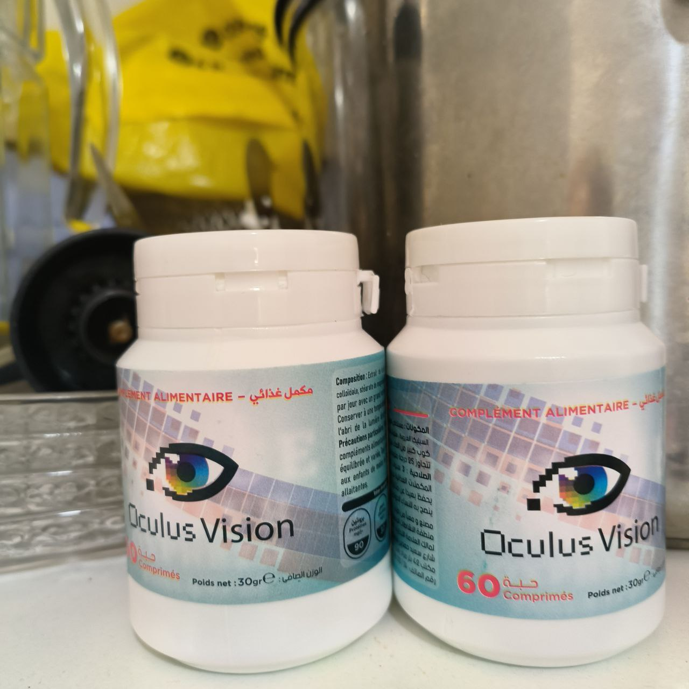
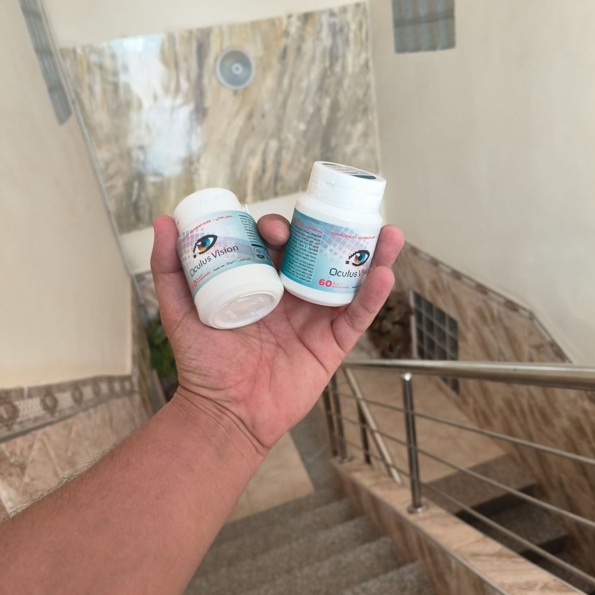
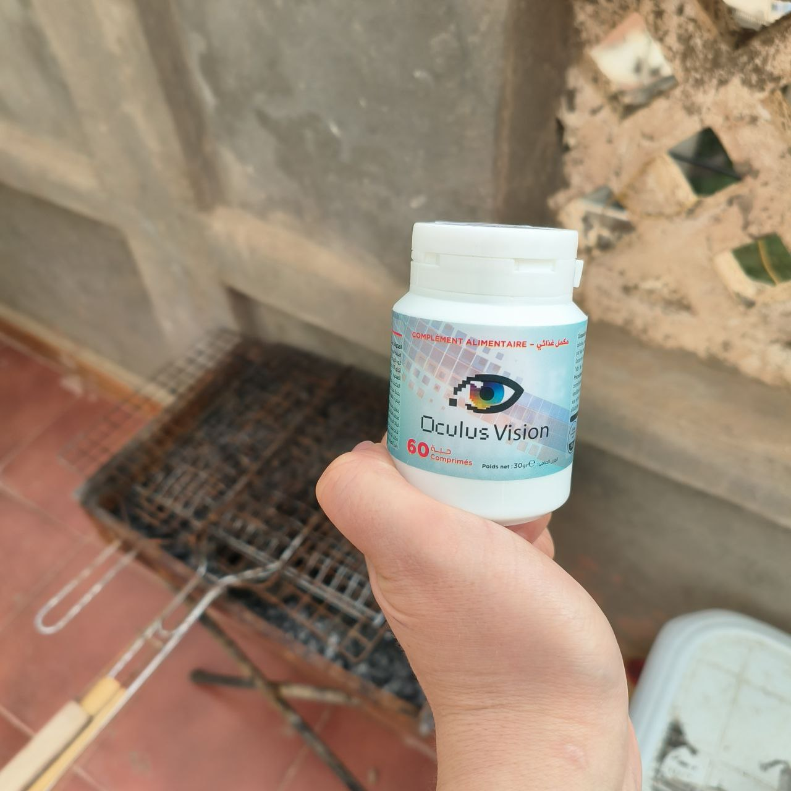
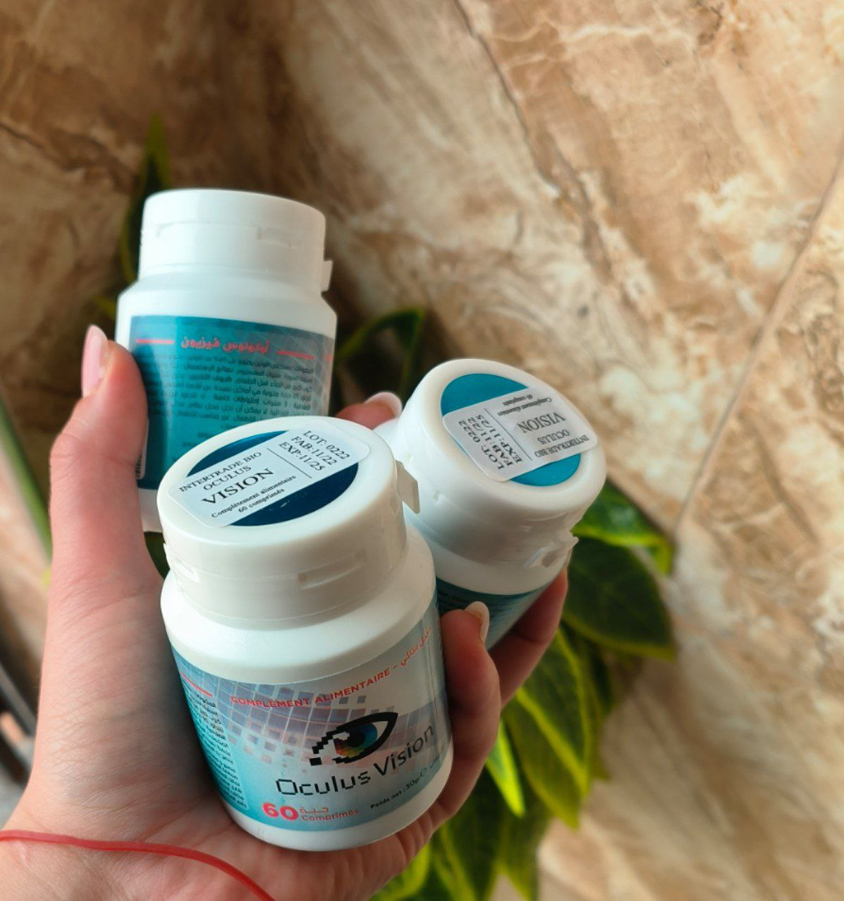

الإرهاق العيني هو حالة شائعة يمكن أن يواجهها الأفراد نتيجة لاستخدام طويل للعينين في الأنشطة التي تتطلب تركيزًا شديدًا. العديد من الأنشطة اليومية يمكن أن تسبب إرهاق العين، و في هذا الموضوع سوف نتحدث أكثر عن هذه المشكلة

جفاف العين:
شعور بالعينين الجافتين والمتهيجتين
ألم أو حرقة:
شعور بالألم أو الحرقة داخل أو حول العينين
ضبابية الرؤية:
فقدان الوضوح أو الرؤية الضبابية
صداع:
الشعور بالصداع في منطقة الجبهة أو العينين
ضيق الرؤية:
شعور بالتقييد في حركة الرؤية الجانبية
استخدام الشاشات الرقمية:
قضاء وقت طويل أمام الحواسيب، الهواتف الذكية، أو الأجهزة اللوحية يمكن أن يتسبب في تعب العين وجفافها.
القراءة لفترات طويلة:
القراءة المستمرة لفترات طويلة دون أخذ استراحات يمكن أن يسبب إجهاد العين.
القيادة لفترات طويلة:
القيادة لفترة طويلة أو القيادة في ظروف إضاءة ضعيفة يمكن أن يتسبب في تعب العين.
عدم توفر إضاءة كافية:
العمل أو القراءة في بيئة قليلة الإضاءة يمكن أن يجعل العينين تبذل جهدًا إضافيًا للتركيز.
تصحيح النظر بشكل غير صحيح:
ارتداء نظارات أو عدسات لا تلائم الحاجة البصرية الحقيقية يمكن أن يسبب إجهاد العين.
ويجب ملاحظة أنه في حالات كثيرة، يمكن أن يكون الإعتام مجهول السبب.¹

مشكلة شائعة تتعلق بتركيز العين وتركيز الضوء على الشبكية. يعاني الأشخاص المصابون بالنظر الطويل من صعوبة في رؤية الأشياء القريبة، بينما يعاني الأشخاص المصابون بالنظر القصير من صعوبة في رؤية الأشياء البعيدة.
هذه المشكلة تحدث عندما يرتفع ضغط السائل في العين، مما يؤدي إلى ضرر تدريجي للعصب البصري. تكون أعراض الزرق غير واضحة في المراحل المبكرة، ولكن مع مرور الوقت، يمكن أن يؤدي الإهمال إلى فقدان الرؤية الدائم.
تحدث عندما يتكون غشاء ضبابي في عدسة العين، مما يعوق تدفق الضوء ويسبب تشوهًا في الرؤية. الأعراض الشائعة للكاتاراكت تشمل الرؤية الضبابية، والتحسن المؤقت في الرؤية عند استخدام الإضاءة القوية، وتقلبات في حساسية العين للضوء.
هو التهاب الغشاء الملتحمي الذي يغطي الجزء الأمامي من العين والجفن. تشمل أعراض التهاب الملتحمة الحكة، والاحمرار، والتورم، والإفرازات العينية، وحساسية العين للضوء.
تحدث عندما تفتقر العين إلى الرطوبة الكافية أو عندما يكون نظام إنتاج الدموع غير فعال. تعتبر الحكة، والشعور بالحرقة، والإحساس بوجود جسم غريب، وزيادة الإفراز العيني بعض الأعراض الشائعة للجفاف العيني.
سوف نعرفكم اليوم على الطبيب الشهير جاوم كاتالا مورا طبيب عيون و خبير بمشاكل العيون

من المعروف عن الطبيب جاوم انه يفضل الطرق الطبيعية في التخلص من المشاكل الصحية و ليست الطرق الكيميائية . لذا اليوم سوف نوضح لكم طريقته في التعامل و التخلص من مشاكل العيون بطريقة طبيعية :
يقول الطبيب جاوم انه إذا تم خلط بعض المكونات الطبيعية مع بعضها فسوف تتكون وصفة طبيعية 100% للتخلص من مشاكل العيون و حتى يمكنكم عملها بالمنزل إذا توفرت المكونات
و هنا سوف نسرد لكم المكونات التي نصح بها الطبيب و فوائد كل مكون منهم
مستخلص اللوتين يمكن أن يساعد في تحسين صحة العين، حيث يقوم بحماية العين من الأضرار التي يمكن أن تسببها الأشعة فوق البنفسجية والتي يمكن أن تؤدي إلى مشاكل مثل المياه البيضاء والماكولار ديجنيريشن.
السيليكا الغروية هي عنصر مهم لصحة الجسم، حيث تشكل جزءًا من العديد من الأنسجة في الجسم مثل العظام والأنسجة الضامة والغضاريف. كما أنها تعتبر مضاداً للأكسدة الطبيعي وتساعد في تقوية الجهاز المناعي والحفاظ على صحة الجلد والشعر والأظافر.
أن استهلاك الأطعمة الغنية بالمغنيسيوم يمكن أن يساعد في تحسين صحة العين، حيث يمكن الحصول على المغنيسيوم من الخضروات الورقية الخضراء والمكسرات والحبوب والبقوليات والأسماك واللحوم او عن طريق تناوله في شكل مكمل غذائي .
عند خلط هذه المكونات بشكل مناسب، ستؤدي إلى المساعدة على التخلص من مشاكل العيون و مشكلة إعتام عدسة العين (الكتاركت) و بهذا تكون لديكم طريقة طبيعية ووصفة طبيعية 100% للتخلص من مشاكل العيون و بنصيحة خبير .
لذا بعدما رأينا أهمية كل نبات منهم فإن هذه المكونات إذا تم خلطها معاً سوف تكون نتيجة إستخدامهم رائعة و لكن للأسف هذه المكونات يصعب إيجادها نظراً لغلاء أسعارها و لأن بعضها نادر .

هذا مكمل غذائي طبيعي 100% تعتمد على مجموعة من المستخلصات النباتية النباتية المذكورة بالأعلى و هنا سنقول لكم بعض الفوائد لهذا المنتج الرائع :
يجب تناول حبة واحدة يومياً مع كوب كبير من الماء مع وجبات الطعام .

عند شرائك دورة OculusVision

"استخدمت OculusVision للعيون ولاحظت تحسنًا واضحًا في رؤيتي وتخفيف كبير للاجهاد العيني، أشعر بالراحة الآن."

"كانت التجربة مع OculusVision للعيون مدهشة، شعرت بتحسن كبير في رؤيتي وتخلصت من الإرهاق الدائم الذي كان يؤثر على يومي."

"لقد كنت أعاني من مشاكل في الرؤية بسبب الكتاركت، لكن استخدام OculusVision ساهم في تحسين حالتي وتقليل الضبابية."

"لاحظت تحسناً ملحوظًا في نظري بعد استخدامه OculusVision لفترة قصيرة، وأشعر الآن بأن عيوني أقوى وأقل إرهاقًا."

"استخدمت المكمل OculusVision للوقاية من مشاكل الرؤية، وأجد أن عيوني أكثر راحة ونقاء في الرؤية."


" OculusVision كان فعالًا في تحسين قدرتي على التركيز والتخلص من الإجهاد الناتج عن العمل الطويل أمام الحاسوب."

"أنا مندهشة من تأثير هذا المنتج على تحسين رؤيتي، وخاصة في تقليل الشعور بالجفاف والإرهاق."

"كان استخدام OculusVision خيارًا رائعًا بالنسبة لي، حيث شهدت تحسنًا ملموسًا في رؤيتي والتخلص من الشعور بالتعب العيني."

"رغم أنني كنت أعاني من مشاكل في الرؤية بسبب الكتاركت، إلا أن هذا المكمل الغذائي ساعدني في تجاوز التحديات وتحسين نوعية رؤيتي."

"OculusVision ليس فقط مساعد في التخلص من الإرهاق، بل أيضًا في دعم صحة عيني بشكل عام، أنا ممتنة لهذا التحسين البارز."
"لاحظت تغييرًا إيجابيًا في عيني بفضل هذا المكمل الغذائي، حيث أصبحت الألوان أكثر وضوحا وتلاشى الإرهاق العيني تماما."

شكراً لكم! لقد لحقت بالتخفيض .

أنا أعمل طوال اليوم على الكمبيوتر و لذلك نظري ضعف كثيراً مؤخراً و لكن بعد إستخدامي لهذا المكمل الغذائي حقاً أشعر بتحسن كبير شكراً لكم و أنصح الجميع به !
لقد طلبته لنفسي لاني كنت اعاني من إعتام عدسة العين و النتيجة كانت مذهلة ! شكراً لكم